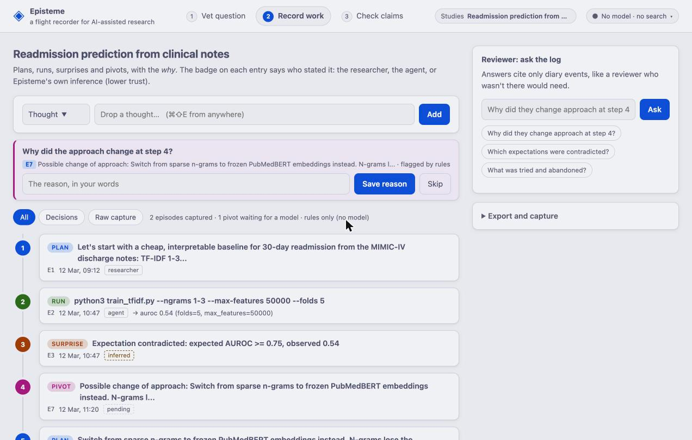

Episteme captures what a researcher and an AI agent do during a study, turns it into a short diary of decisions, and records who stated each reason, so a reviewer who wasn't there can find out why the study changed direction.
The problem
M. Baker, Nature 533, 452–454 (2016). Survey of 1,576 researchers.
What a reviewer sees

Hospital-readmission demo: the run misses its target, a surprise is recorded, and the change of approach asks for its reason.
How it works
Claude Code and git hooks record instructions, commands, outputs and commits as they happen, secrets redacted.
The raw log is split into episodes: one instruction and everything the agent did for it.
Rules write plans, runs, surprises and commits. A model only judges flagged changes of approach.
Answers cite diary entries. Export a Markdown decision appendix or W3C PROV-JSON.
Why you can trust it
Ask the log
"Why did they switch to clinical embeddings?"
Because the plan expected AUROC ≥ 0.75 and the run scored 0.54 [E1–E3]. The researcher switched from sparse n-grams to frozen clinical embeddings, saying that n-grams lose the clinical semantics they need [E4]. The new approach reached 0.81 [E5].
Try it
./run # Python 3.9+, standard library onlyOpens a local page. Open a demo, or press ▶ Replay to watch its diary being written entry by entry.
Use it on your own project
python3 capture/install.py /path/to/projectInstalls the Claude Code and git hooks. If Episteme isn't running, events wait and arrive later; the agent is never blocked.